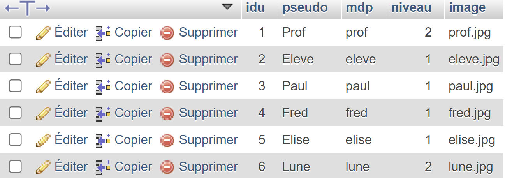
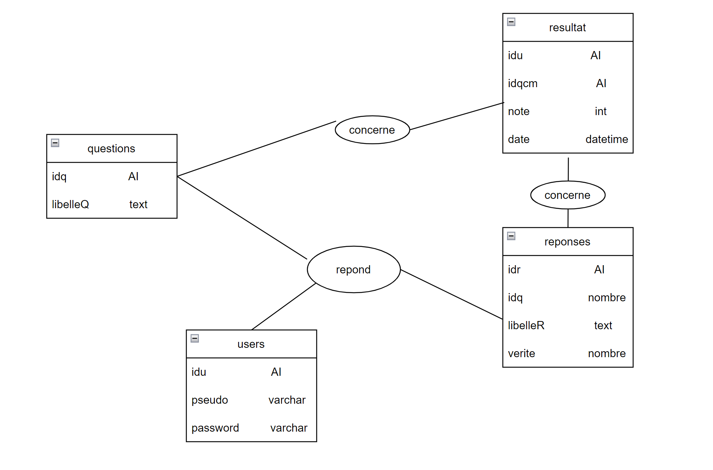

En première année, j'ai réalisé un projet appelé "QCM", qui a été ma première expérience en PHP. Il s'agissait d'un site proposant des QCM aléatoires permettant aux utilisateurs d'avoir la correction du QCM et une note atribué a la fin.
Notre équipe a travaillé en étroite collaboration pour concevoir une interface conviviale et attrayante, en utilisant HTML et CSS pour la structure et le design du site. Nous avons veillé à ce que l'expérience utilisateur soit intuitive et agréable, en mettant en œuvre des fonctionnalités de navigation fluides et une présentation visuelle soignée.
Et Grâce à PHP, nous avons développé les fonctionnalités essentielles du projet. La génération aléatoire des questions, l'enregistrement des notes des utilisateurs et le calcul des résultats sont autant de fonctionnalités qui ont été implémentées avec succès.


Dans le projet "QCM", j'ai également développé un espace de connexion pour permettre aux utilisateurs de se connecter à leur profil.
L'interface de l'espace de connexion permet aux utilisateurs de saisir leurs identifiants (nom d'utilisateur et mot de passe) pour accéder à leur compte. J'ai mis en place des fonctionnalités de validation pour garantir la saisie correcte des informations et sécuriser l'accès aux comptes des utilisateurs.

Le projet QCM que nous avons développé utilise une base de données MySQL pour stocker et gérer les informations essentielles. Notre base de données est conçue avec quatre tables clés : "reponses", "questions", "resultat" et "users".
La table "reponses" est utilisée pour enregistrer les réponses possibles à chaque question du questionnaire. Chaque réponse est associée à un identifiant unique et est liée à la question correspondante.
La table "questions" contient les différentes questions du QCM. Chaque question est enregistrée avec un identifiant unique, le texte de la question et l'identifiant de la réponse correcte associée à cette question.
La table "resultat" est utilisée pour enregistrer les resultat des users renseignant l'identifiant de l'utilisateur le numero du qcm et sa note obtenu.
 